The Dodge Challenger was a three-car automobile model marketed by the Dodge division of Chrysler LLC since 1970. It was designed to compete against cars like the Chevrolet Camaro and Ford Mustang, while offering virtually every engine in Chrysler's inventory. The Challenger's longer wheelbase, larger dimensions and more luxurious interior were prompted by the launch of the 1967 Mercury Cougar. The exterior design was done by Carl Cameron, who also did the exterior for the 1966 Dodge Charger. Sales fell dramatically after 1970, and Challenger production ceased midway through the 1974 model year.
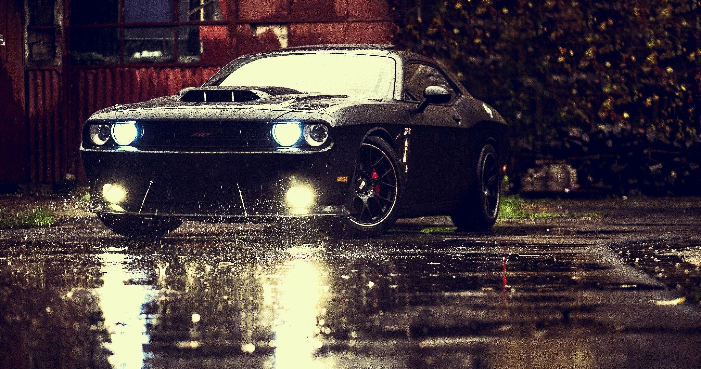The Dodge Challenger T/A (Trans Am) was a 1970-only model with a 340 Six Pack engine, low-restriction dual exhausts, a TorqueFlite automatic or pistol-grip Hurst-shifted four-speed transmission, 3.55:1 or 3.90:1 gears, manual or power steering, front disc brakes, special Rallye suspension, different size tires, and a fiberglass ducktail rear spoiler.
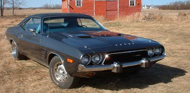The Challenger name was revived in 1978 for a version of the early Mitsubishi Galant Lambda coupe, sold through Dodge dealers as a captive import. It had a four-cylinder engine and was a brisk performer due to its 2.6 L engine, which pioneered the use of balance shafts.
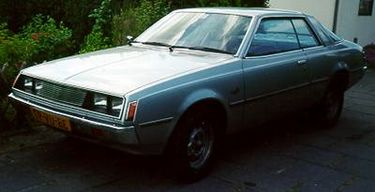The third-generation Dodge Challenger debuted on February 6, 2008 at the Chicago Auto Show and Philadelphia International Auto Show. It is a 2-door coupe with a modified LX platform and 6.1 L Hemi engine and 5-speed AutoStick automatic transmission. Production commenced on May 8, 2008. Chrysler auctioned two 2008 SRT8s for charity, with car #1 going for $400,000.00 and car #2 for $228,143.43. Many of the "first delivery" Challengers were pre-sold or sold for above MSRP.
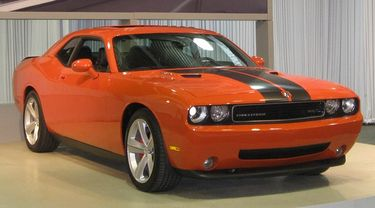 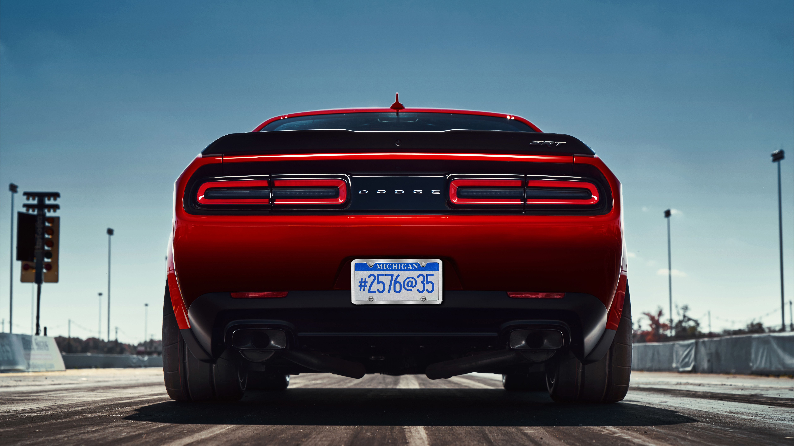
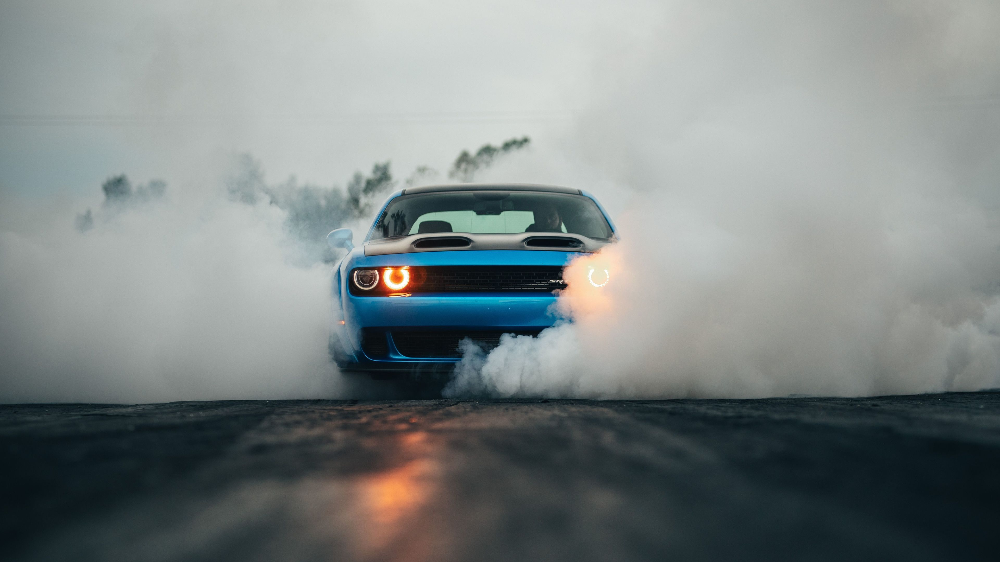
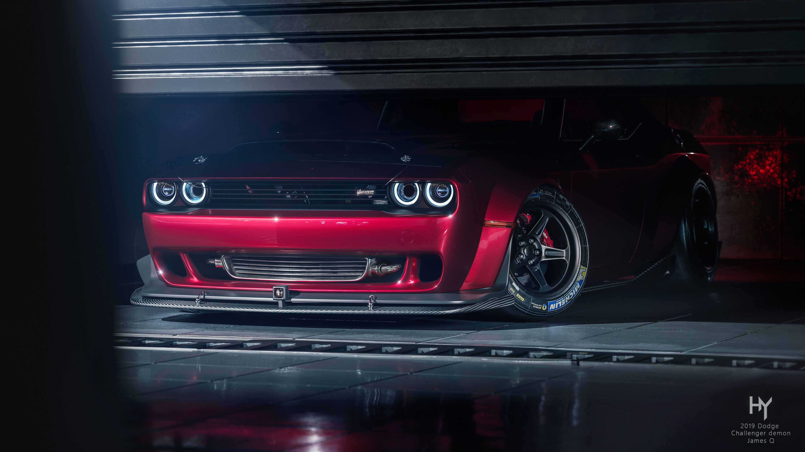
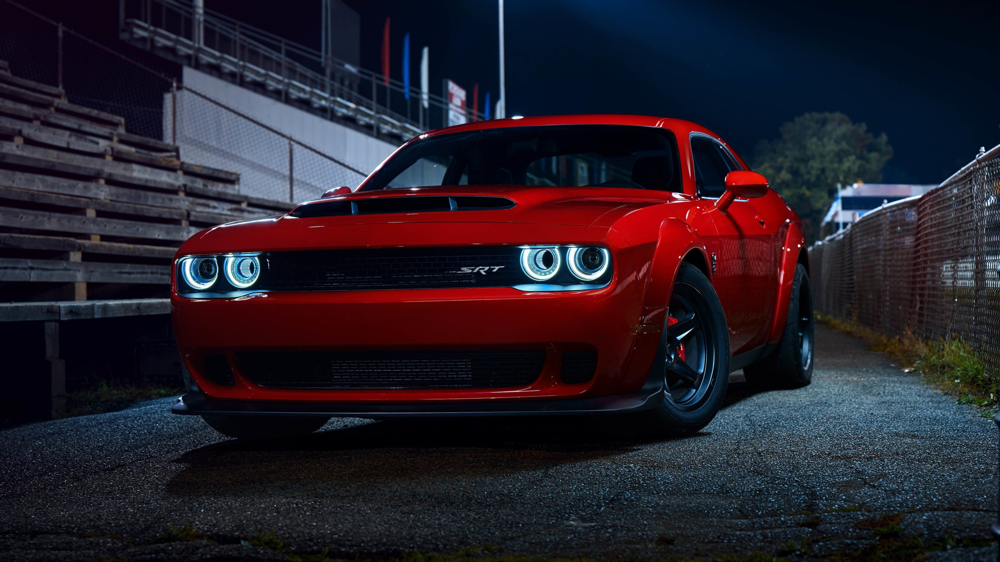
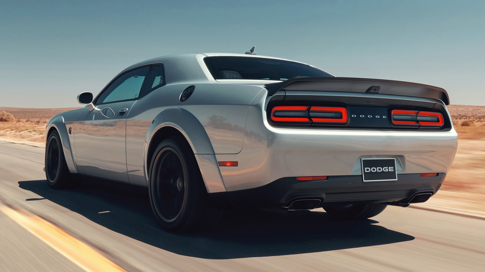
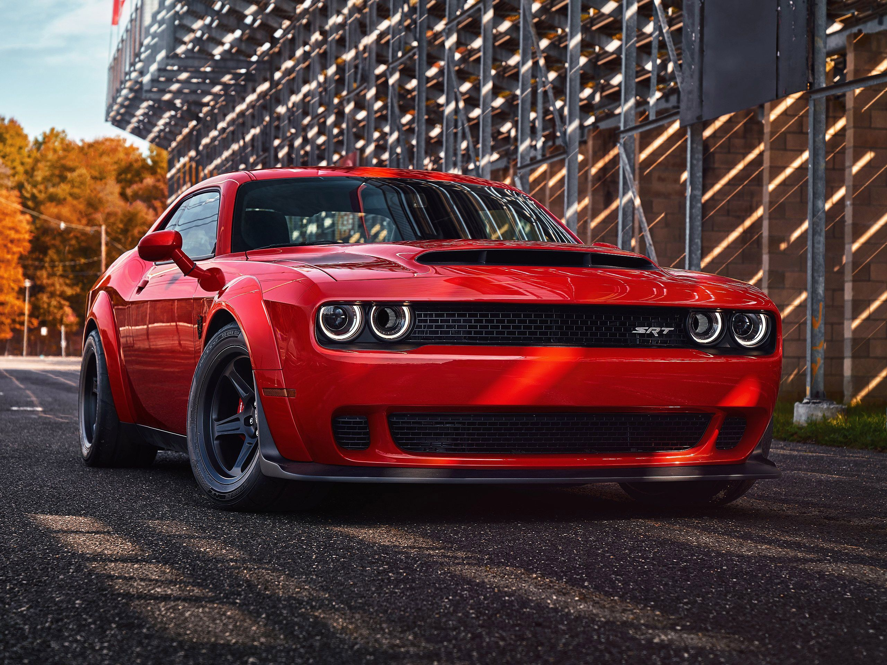
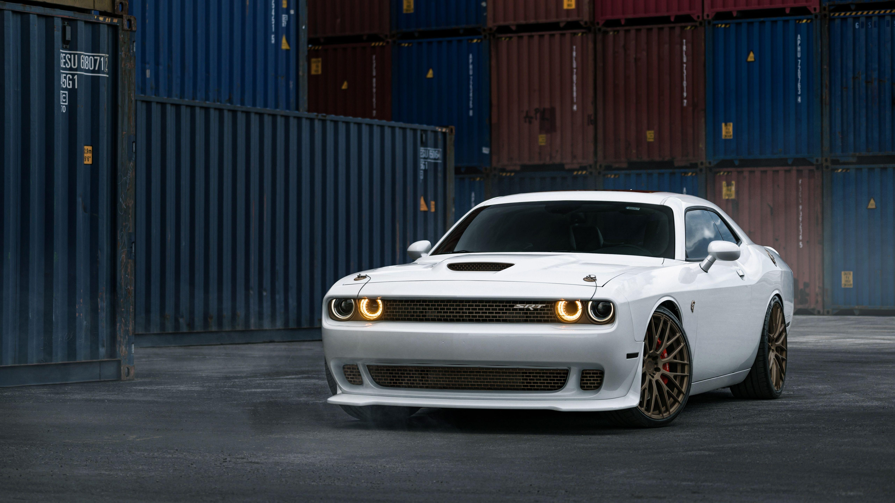
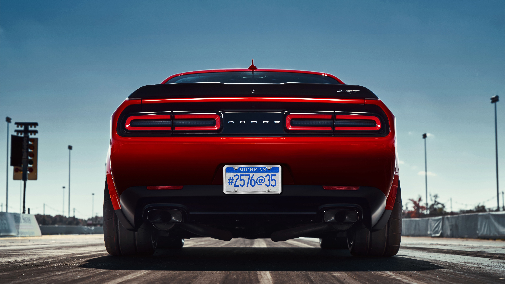
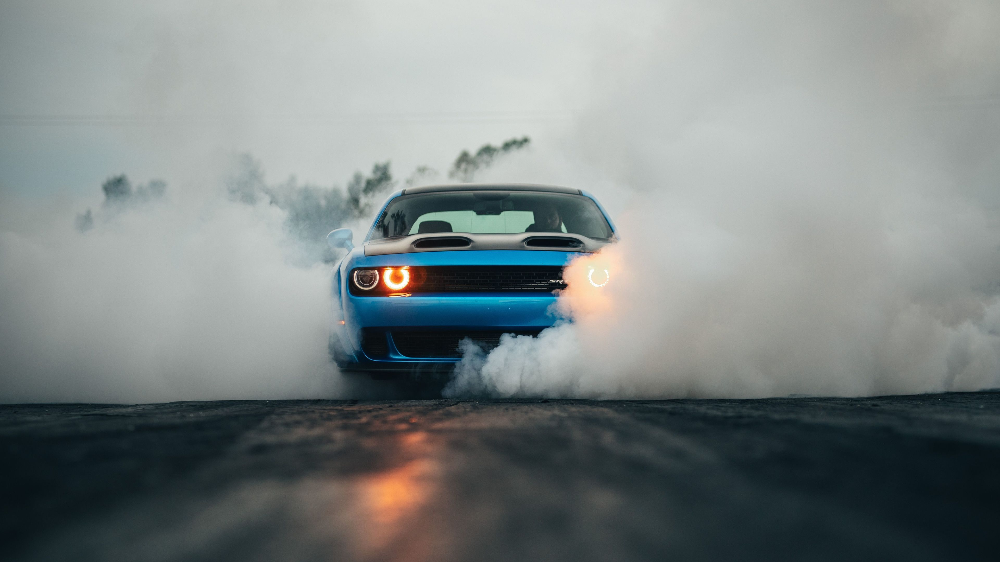
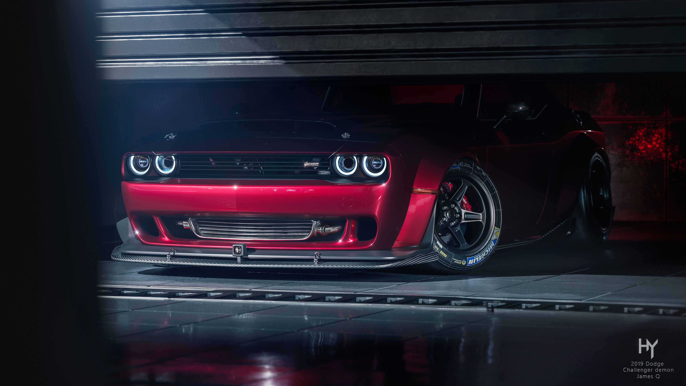
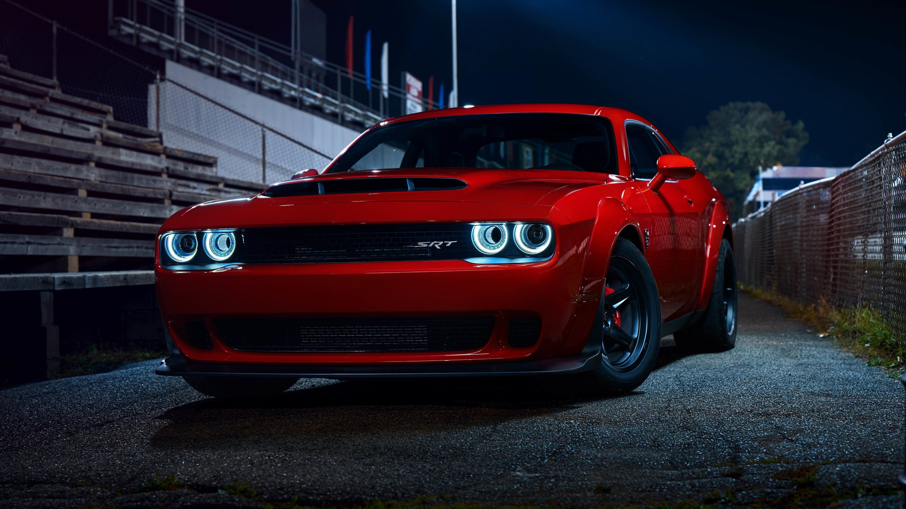
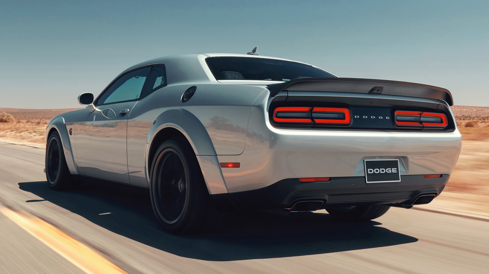
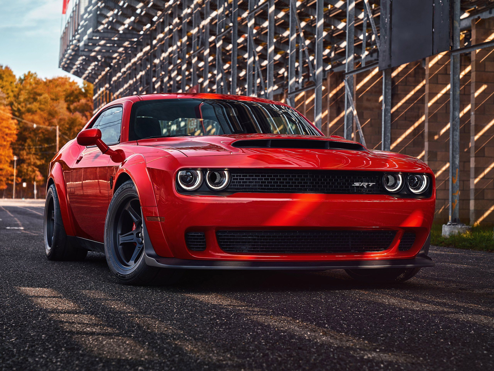
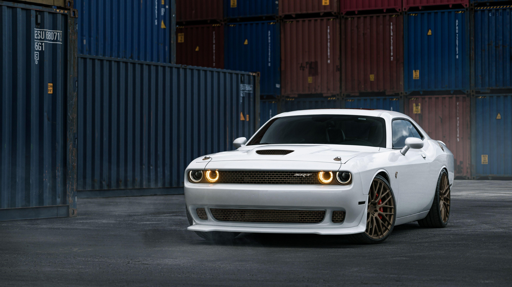